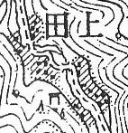

|
◆上田（うえだ）

※ この地図は、地理調査所発行の1／50,000地形図「下梨」（昭和32.8）を使用したものである
所在：南砺市大鋸屋（おおがや）
地形図：下梨／下梨
異表記：二ッ屋（旧称）
形態：川沿いに家屋が集まる
標高：約300m
訪問：2011年6月
町の南部、二ッ屋川上流部にある。
現在家屋はまったく残っておらず、中心部に碑や石仏がまとめられている。碑には昭和20年頃の地図があり、これによると中谷7・江田4・川端4・大岩3・北川3・山口3・山本3・稲場（※1）2・橋本2・新谷・高嶋・東・吉田各1の35軒。碑から少し下ると橋があり、対岸で屋敷跡を確認。神社の位置は分からなかった。上流部は砕石場や廃棄物置場として土地が利用され、面影はほとんどない。
HEYANEKO氏の調査によると、集落には学校（城端小学校上田分校。昭和48年閉校）があったそう。
資料『城端町の歴史と文化』によると、二ッ屋の地名の由来は落武者前田氏と寺院（改上寺）（※2）の2軒が居住していたことによるという。細尾（ほそお）峠道・小瀬（おぜ）峠道（※3）の交通の要所で、五箇山や白川の街道の宿場として栄えたという。炭焼きのほか荷物を運ぶ「ボッカ」として働く人も多かった。
「角川」によると、住民は昭和48年理休（りきゅう）地内の折田林へ集団移住し、49年閉村式。
また資料『村の記憶』には村跡として家屋の並んだ写真が掲載されており、本文でも「今でも生活できそうな村跡であった」「空家が三戸残っている」とある。筆者の訪問が平成であるので、私が訪れるまでにこの3軒は取り壊されたのだろう。なお神社の熊野社は、平成2年に北野天満宮に合祀されたという。
大字上田は、近世の礪波郡山田郷の二ッ屋（ふたつや）村。。明治12年上田村と改称。明治22年大鋸屋村（のち城端町）の大字となる。明治5年30戸174人、昭和5年42戸、同46年22戸、同48年8戸（角川）。
※1 『村の記憶』では「稲葉」。誤植か
※2 碑では「海乗寺」
※3 細尾峠…大鋸屋地区と平村【現・南砺市】を結ぶ。現在は細尾トンネルが開通。小瀬峠…大鋸屋地区と上平村【現・南砺市】を結ぶ
|